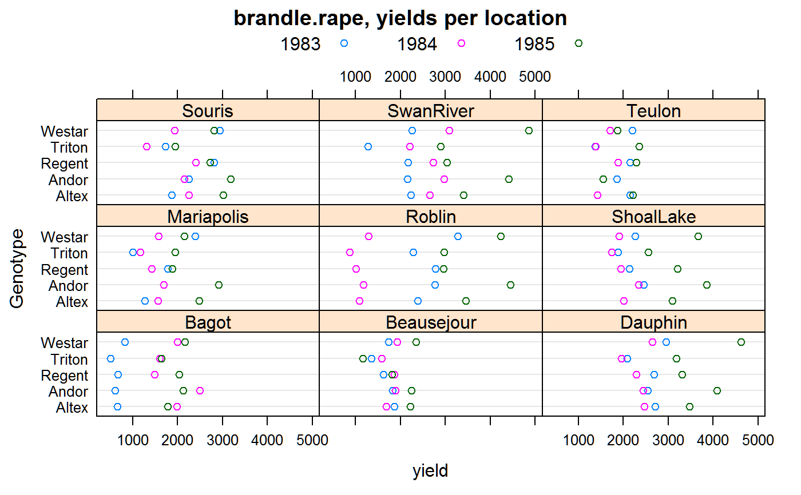

brandle.rape.RdRape seed yields for 5 genotypes, 3 years, 9 locations.
A data frame with 135 observations on the following 4 variables.
gengenotype
yearyear, numeric
loclocation, 9 levels
yieldyield, kg/ha
The yields are the mean of 4 reps.
Note, in table 2 of Brandle, the value of Triton in 1985 at Bagot is shown as 2355, but should be 2555 to match the means reported in the paper.
Brandle, JE and McVetty, PBE. (1988). Genotype x environment interaction and stability analysis of seed yield of oilseed rape grown in Manitoba. Canadian Journal of Plant Science, 68, 381--388.
Used with permission of P. McVetty.
library(agridat) data(brandle.rape) dat <- brandle.rape libs(lattice) dotplot(gen~yield|loc, dat, group=year, auto.key=list(columns=3), main="brandle.rape, yields per location", ylab="Genotype")# Matches table 4 of Brandle # round(tapply(dat$yield, dat$gen, mean),0) # Brandle reports variance components: # sigma^2_gl: 9369 gy: 14027 g: 72632 resid: 150000 # Brandle analyzed rep-level data, so the residual variance is different. # The other components are matched by the following analysis. libs(lme4) libs(lucid) dat$year <- factor(dat$year) m1 <- lmer(yield ~ year + loc + year:loc + (1|gen) + (1|gen:loc) + (1|gen:year), data=dat) vc(m1)#> grp var1 var2 vcov sdcor #> gen:loc (Intercept) <NA> 9361 96.75 #> gen:year (Intercept) <NA> 14030 118.4 #> gen (Intercept) <NA> 72590 269.4 #> Residual <NA> <NA> 75010 273.9## grp var1 var2 vcov sdcor ## gen:loc (Intercept)9363 96.76 ## gen:year (Intercept) 14030 118.4 ## gen (Intercept) 72630 269.5 ## Residual 75010 273.9